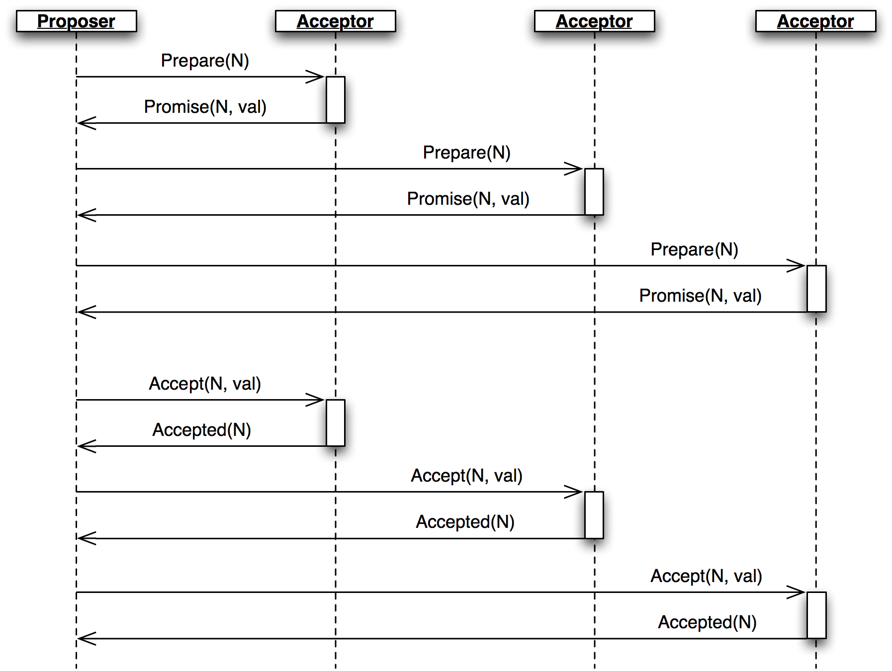
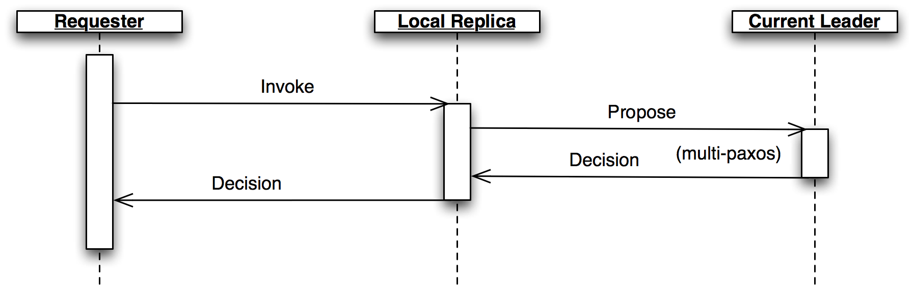
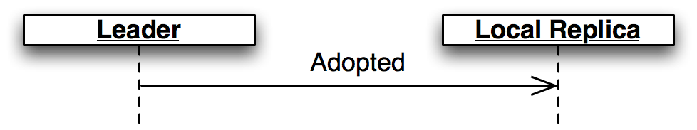
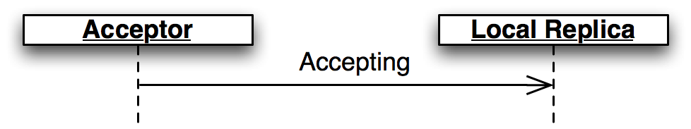
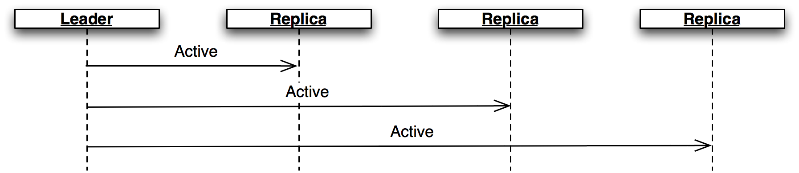
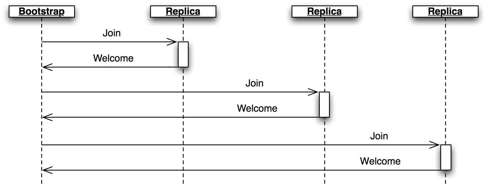
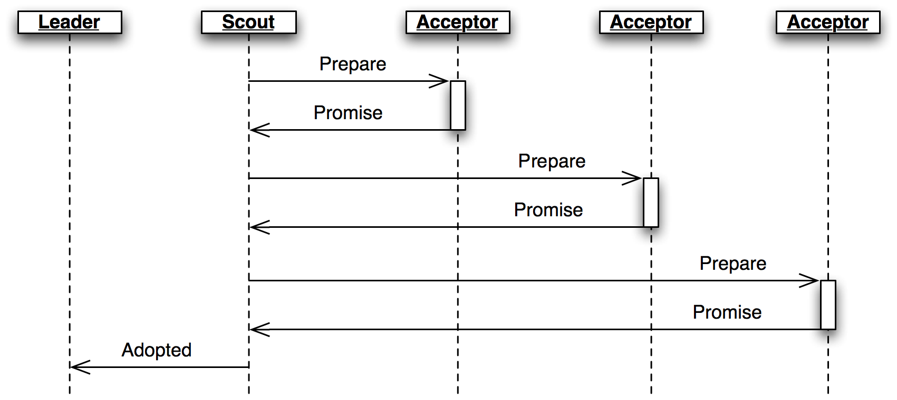

Clustering by Consensus
by Dustin J. Mitchell
Dustin is an open source software developer and release engineer at Mozilla. He has worked on projects as varied as a host configuration system in Puppet, a Flask-based web framework, unit tests for firewall configurations, and a continuous integration framework in Twisted Python. Find him as \@djmitche on GitHub or at dustin@mozilla.com.
Introduction
In this chapter, we’ll explore implementation of a network protocol designed to support reliable distributed computation. Network protocols can be difficult to implement correctly, so we’ll look at some techniques for minimizing bugs and for catching and fixing the remaining few. Building reliable software, too, requires some special development and debugging techniques.
Motivating Example
The focus of this chapter is on the protocol implementation, but as a motivating example let’s consider a simple bank account management service. In this service, each account has a current balance and is identified with an account number. Users access the accounts by requesting operations like “deposit”, “transfer”, or “get-balance”. The “transfer” operation operates on two accounts at once – the source and destination accounts – and must be rejected if the source account’s balance is too low.
If the service is hosted on a single server, this is easy to implement: use a lock to make sure that transfer operations don’t run in parallel, and verify the source account’s balance in that method. However, a bank cannot rely on a single server for its critical account balances. Instead, the service is distributed over multiple servers, with each running a separate instance of exactly the same code. Users can then contact any server to perform an operation.
In a naive implementation of distributed processing, each server would keep a local copy of every account’s balance. It would handle any operations it received, and send updates for account balances to other servers. But this approach introduces a serious failure mode: if two servers process operations for the same account at the same time, which new account balance is correct? Even if the servers share operations with one another instead of balances, two simultaneous transfers out of an account might overdraw the account.
Fundamentally, these failures occur when servers use their local state to perform operations, without first ensuring that the local state matches the state on other servers. For example, imagine that server A receives a transfer operation from Account 101 to Account 202, when server B has already processed another transfer of Account 101’s full balance to Account 202, but not yet informed server A. The local state on server A is different from that on server B, so server A incorrectly allows the transfer to complete, even though the result is an overdraft on Account 101.
Distributed State Machines
The technique for avoiding such problems is called a “distributed state machine”. The idea is that each server executes exactly the same deterministic state machine on exactly the same inputs. By the nature of state machines, then, each server will see exactly the same outputs. Operations such as “transfer” or “get-balance”, together with their parameters (account numbers and amounts) represent the inputs to the state machine.
The state machine for this application is simple:
def execute_operation(state, operation):
if operation.name == 'deposit':
if not verify_signature(operation.deposit_signature):
return state, False
state.accounts[operation.destination_account] += operation.amount
return state, True
elif operation.name == 'transfer':
if state.accounts[operation.source_account] < operation.amount:
return state, False
state.accounts[operation.source_account] -= operation.amount
state.accounts[operation.destination_account] += operation.amount
return state, True
elif operation.name == 'get-balance':
return state, state.accounts[operation.account]
Note that executing the “get-balance” operation does not modify the state, but is still implemented as a state transition. This guarantees that the returned balance is the latest information in the cluster of servers, and is not based on the (possibly stale) local state on a single server.
This may look different than the typical state machine you’d learn about in a computer science course. Rather than a finite set of named states with labeled transitions, this machine’s state is the collection of account balances, so there are infinite possible states. Still, the usual rules of deterministic state machines apply: starting with the same state and processing the same operations will always produce the same output.
So, the distributed state machine technique ensures that the same operations occur on each host. But the problem remains of ensuring that every server agrees on the inputs to the state machine. This is a problem of consensus, and we’ll address it with a derivative of the Paxos algorithm.
Consensus by Paxos
Paxos was described by Leslie Lamport in a fanciful paper, first submitted in 1990 and eventually published in 1998, entitled “The Part-Time Parliament”1. Lamport’s paper has a great deal more detail than we will get into here, and is a fun read. The references at the end of the chapter describe some extensions of the algorithm that we have adapted in this implementation.
The simplest form of Paxos provides a way for a set of servers to agree on one value, for all time. Multi-Paxos builds on this foundation by agreeing on a numbered sequence of facts, one at a time. To implement a distributed state machine, we use Multi-Paxos to agree on each state-machine input, and execute them in sequence.
Simple Paxos
So let’s start with “Simple Paxos”, also known as the Synod protocol, which provides a way to agree on a single value that can never change. The name Paxos comes from the mythical island in “The Part-Time Parliament”, where lawmakers vote on legislation through a process Lamport dubbed the Synod protocol.
The algorithm is a building block for more complex algorithms, as we’ll see below. The single value we’ll agree on in this example is the first transaction processed by our hypothetical bank. While the bank will process transactions every day, the first transaction will only occur once and never change, so we can use Simple Paxos to agree on its details.
The protocol operates in a series of ballots, each led by a single member of the cluster, called the proposer. Each ballot has a unique ballot number based on an integer and the proposer’s identity. The proposer’s goal is to get a majority of cluster members, acting as acceptors, to accept its value, but only if another value has not already been decided.

A ballot begins with the proposer sending aPrepare message with the ballot number N to the acceptors and waiting to hear from a majority (Figure: A Ballot.)
The Prepare message is a request for the accepted value (if any) with the highest ballot number less than N.
Acceptors respond with a Promise containing any value they have already accepted, and promising not to accept any ballot numbered less than N in the future.
If the acceptor has already made a promise for a larger ballot number, it includes that number in the Promise, indicating that the proposer has been pre-empted.
In this case, the ballot is over, but the proposer is free to try again in another ballot (and with a larger ballot number).
When the proposer has heard back from a majority of the acceptors, it sends an Accept message, including the ballot number and value, to all acceptors.
If the proposer did not receive any existing value from any acceptor, then it sends its own desired value.
Otherwise, it sends the value from the highest-numbered promise.
Unless it would violate a promise, each acceptor records the value from the Accept message as accepted and replies with an Accepted message.
The ballot is complete and the value decided when the proposer has heard its ballot number from a majority of acceptors.
Returning to the example, initially no other value has been accepted, so the acceptors all send back a Promise with no value, and the proposer sends an Accept containing its value, say:
operation(name='deposit', amount=100.00, destination_account='Mike DiBernardo')
If another proposer later initiates a ballot with a lower ballot number and a different operation (say, a transfer to acount 'Dustin J. Mitchell'), the acceptors will simply not accept it.
If that ballot has a larger ballot number, then the Promise from the acceptors will inform the proposer about Michael’s $100.00 deposit operation, and the proposer will send that value in the Accept message instead of the transfer to Dustin.
The new ballot will be accepted, but in favor of the same value as the first ballot.
In fact, the protocol will never allow two different values to be decided, even if the ballots overlap, messages are delayed, or a minority of acceptors fail.
When multiple proposers make a ballot at the same time, it is easy for neither ballot to be accepted. Both proposers then re-propose, and hopefully one wins, but the deadlock can continue indefinitely if the timing works out just right.
Consider the following sequence of events:
- Proposer A performs the
Prepare/Promisephase for ballot number 1. - Before Proposer A manages to get its proposal accepted, Proposer B performs a
Prepare/Promisephase for ballot number 2. - When Proposer A finally sends its
Acceptwith ballot number 1, the acceptors reject it because they have already promised ballot number 2. - Proposer A reacts by immediately sending a
Preparewith a higher ballot number (3), before Proposer B can send itsAcceptmessage. - Proposer B’s subsequent
Acceptis rejected, and the process repeats.
With unlucky timing – more common over long-distance connections where the time between sending a message and getting a response is long – this deadlock can continue for many rounds.
Multi-Paxos
Reaching consensus on a single static value is not particularly useful on its own. Clustered systems such as the bank account service want to agree on a particular state (account balances) that changes over time. We use Paxos to agree on each operation, treated as a state machine transition.
Multi-Paxos is, in effect, a sequence of simple Paxos instances (slots), each numbered sequentially. Each state transition is given a “slot number”, and each member of the cluster executes transitions in strict numeric order. To change the cluster’s state (to process a transfer operation, for example), we try to achieve consensus on that operation in the next slot. In concrete terms, this means adding a slot number to each message, with all of the protocol state tracked on a per-slot basis.
Running Paxos for every slot, with its minimum of two round trips, would be too slow.
Multi-Paxos optimizes by using the same set of ballot numbers for all slots, and performing the Prepare/Promise phase for all slots at once.
Paxos Made Pretty Hard
Implementing Multi-Paxos in practical software is notoriously difficult, spawning a number of papers mocking Lamport’s “Paxos Made Simple” with titles like “Paxos Made Practical”.
First, the multiple-proposers problem described above can become problematic in a busy environment, as each cluster member attempts to get its state machine operation decided in each slot. The fix is to elect a “leader” which is responsible for submitting ballots for each slot. All other cluster nodes then send new operations to the leader for execution. Thus, in normal operation with only one leader, ballot conflicts do not occur.
The Prepare/Promise phase can function as a kind of leader election: whichever cluster member owns the most recently promised ballot number is considered the leader.
The leader is then free to execute the Accept/Accepted phase directly without repeating the first phase.
As we’ll see below, leader elections are actually quite complex.
Although simple Paxos guarantees that the cluster will not reach conflicting decisions, it cannot guarantee that any decision will be made.
For example, if the initial Prepare message is lost and doesn’t reach the acceptors, then the proposer will wait for a Promise message that will never arrive.
Fixing this requires carefully orchestrated re-transmissions: enough to eventually make progress, but not so many that the cluster buries itself in a packet storm.
Another problem is the dissemination of decisions.
A simple broadcast of a Decision message can take care of this for the normal case.
If the message is lost, though, a node can remain permanently ignorant of the decision and unable to apply state machine transitions for later slots.
So an implementation needs some mechanism for sharing information about decided proposals.
Our use of a distributed state machine presents another interesting challenge: start-up. When a new node starts, it needs to catch up on the existing state of the cluster. Although it can do so by catching up on decisions for all slots since the first, in a mature cluster this may involve millions of slots. Furthermore, we need some way to initialize a new cluster.
But enough talk of theory and algorithms – let’s have a look at the code.
Introducing Cluster
The Cluster library in this chapter implements a simple form of Multi-Paxos. It is designed as a library to provide a consensus service to a larger application.
Users of this library will depend on its correctness, so it’s important to structure the code so that we can see – and test – its correspondence to the specification. Complex protocols can exhibit complex failures, so we will build support for reproducing and debugging rare failures.
The implementation in this chapter is proof-of-concept code: enough to demonstrate that the core concept is practical, but without all of the mundane equipment required for use in production. The code is structured so that such equipment can be added later with minimal changes to the core implementation.
Let’s get started.
Types and Constants
Cluster’s protocol uses fifteen different message types, each defined as a Python namedtuple.
Accepted = namedtuple('Accepted', ['slot', 'ballot_num'])
Accept = namedtuple('Accept', ['slot', 'ballot_num', 'proposal'])
Decision = namedtuple('Decision', ['slot', 'proposal'])
Invoked = namedtuple('Invoked', ['client_id', 'output'])
Invoke = namedtuple('Invoke', ['caller', 'client_id', 'input_value'])
Join = namedtuple('Join', [])
Active = namedtuple('Active', [])
Prepare = namedtuple('Prepare', ['ballot_num'])
Promise = namedtuple('Promise', ['ballot_num', 'accepted_proposals'])
Propose = namedtuple('Propose', ['slot', 'proposal'])
Welcome = namedtuple('Welcome', ['state', 'slot', 'decisions'])
Decided = namedtuple('Decided', ['slot'])
Preempted = namedtuple('Preempted', ['slot', 'preempted_by'])
Adopted = namedtuple('Adopted', ['ballot_num', 'accepted_proposals'])
Accepting = namedtuple('Accepting', ['leader'])
Using named tuples to describe each message type keeps the code clean and helps avoid some simple errors. The named tuple constructor will raise an exception if it is not given exactly the right attributes, making typos obvious. The tuples format themselves nicely in log messages, and as an added bonus don’t use as much memory as a dictionary.
Creating a message reads naturally:
msg = Accepted(slot=10, ballot_num=30)
And the fields of that message are accessible with a minimum of extra typing:
got_ballot_num = msg.ballot_num
We’ll see what these messages mean in the sections that follow. The code also introduces a few constants, most of which define timeouts for various messages:
JOIN_RETRANSMIT = 0.7
CATCHUP_INTERVAL = 0.6
ACCEPT_RETRANSMIT = 1.0
PREPARE_RETRANSMIT = 1.0
INVOKE_RETRANSMIT = 0.5
LEADER_TIMEOUT = 1.0
NULL_BALLOT = Ballot(-1, -1) # sorts before all real ballots
NOOP_PROPOSAL = Proposal(None, None, None) # no-op to fill otherwise empty slots
Finally, Cluster uses two data types named to correspond to the protocol description:
Proposal = namedtuple('Proposal', ['caller', 'client_id', 'input'])
Ballot = namedtuple('Ballot', ['n', 'leader'])
Component Model
Humans are limited by what we can hold in our active memory. We can’t reason about the entire Cluster implementation at once – it’s just too much, so it’s easy to miss details. For similar reasons, large monolithic codebases are hard to test: test cases must manipulate many moving pieces and are brittle, failing on almost any change to the code.
To encourage testability and keep the code readable, we break Cluster down into a handful of classes corresponding to the roles described in the protocol.
Each is a subclass of Role.
class Role(object):
def __init__(self, node):
self.node = node
self.node.register(self)
self.running = True
self.logger = node.logger.getChild(type(self).__name__)
def set_timer(self, seconds, callback):
return self.node.network.set_timer(self.node.address, seconds,
lambda: self.running and callback())
def stop(self):
self.running = False
self.node.unregister(self)
The roles that a cluster node has are glued together by the Node class, which represents a single node on the network.
Roles are added to and removed from the node as execution proceeds.
Messages that arrive on the node are relayed to all active roles, calling a method named after the message type with a do_ prefix.
These do_ methods receive the message’s attributes as keyword arguments for easy access.
The Node class also provides a send method as a convenience, using functools.partial to supply some arguments to the same methods of the Network class.
class Node(object):
unique_ids = itertools.count()
def __init__(self, network, address):
self.network = network
self.address = address or 'N%d' % self.unique_ids.next()
self.logger = SimTimeLogger(
logging.getLogger(self.address), {'network': self.network})
self.logger.info('starting')
self.roles = []
self.send = functools.partial(self.network.send, self)
def register(self, roles):
self.roles.append(roles)
def unregister(self, roles):
self.roles.remove(roles)
def receive(self, sender, message):
handler_name = 'do_%s' % type(message).__name__
for comp in self.roles[:]:
if not hasattr(comp, handler_name):
continue
comp.logger.debug("received %s from %s", message, sender)
fn = getattr(comp, handler_name)
fn(sender=sender, **message._asdict())
Application Interface
The application creates and starts a Member object on each cluster member, providing an application-specific state machine and a list of peers.
The member object adds a bootstrap role to the node if it is joining an existing cluster, or seed if it is creating a new cluster.
It then runs the protocol (via Network.run) in a separate thread.
The application interacts with the cluster through the invoke method, which kicks off a proposal for a state transition.
Once that proposal is decided and the state machine runs, invoke returns the machine’s output.
The method uses a simple synchronized Queue to wait for the result from the protocol thread.
class Member(object):
def __init__(self, state_machine, network, peers, seed=None,
seed_cls=Seed, bootstrap_cls=Bootstrap):
self.network = network
self.node = network.new_node()
if seed is not None:
self.startup_role = seed_cls(self.node, initial_state=seed, peers=peers,
execute_fn=state_machine)
else:
self.startup_role = bootstrap_cls(self.node,
execute_fn=state_machine, peers=peers)
self.requester = None
def start(self):
self.startup_role.start()
self.thread = threading.Thread(target=self.network.run)
self.thread.start()
def invoke(self, input_value, request_cls=Requester):
assert self.requester is None
q = Queue.Queue()
self.requester = request_cls(self.node, input_value, q.put)
self.requester.start()
output = q.get()
self.requester = None
return output
Role Classes
Let’s look at each of the role classes in the library one by one.
Acceptor
The Acceptor implements the acceptor role in the protocol, so it must store the ballot number representing its most recent promise, along with the set of accepted proposals for each slot.
It then responds to Prepare and Accept messages according to the protocol.
The result is a short class that is easy to compare to the protocol.
For acceptors, Multi-Paxos looks a lot like Simple Paxos, with the addition of slot numbers to the messages.
class Acceptor(Role):
def __init__(self, node):
super(Acceptor, self).__init__(node)
self.ballot_num = NULL_BALLOT
self.accepted_proposals = {} # {slot: (ballot_num, proposal)}
def do_Prepare(self, sender, ballot_num):
if ballot_num > self.ballot_num:
self.ballot_num = ballot_num
# we've heard from a scout, so it might be the next leader
self.node.send([self.node.address], Accepting(leader=sender))
self.node.send([sender], Promise(
ballot_num=self.ballot_num,
accepted_proposals=self.accepted_proposals
))
def do_Accept(self, sender, ballot_num, slot, proposal):
if ballot_num >= self.ballot_num:
self.ballot_num = ballot_num
acc = self.accepted_proposals
if slot not in acc or acc[slot][0] < ballot_num:
acc[slot] = (ballot_num, proposal)
self.node.send([sender], Accepted(
slot=slot, ballot_num=self.ballot_num))
Replica
The Replica class is the most complicated role class, as it has a few closely related responsibilities:
- Making new proposals;
- Invoking the local state machine when proposals are decided;
- Tracking the current leader; and
- Adding newly started nodes to the cluster.
The replica creates new proposals in response to Invoke messages from clients, selecting what it believes to be an unused slot and sending a Propose message to the current leader (Figure: Replica Role Control Flow.)
Furthermore, if the consensus for the selected slot is for a different proposal, the replica must re-propose with a new slot.

Decision messages represent slots on which the cluster has come to consensus.
Here, replicas store the new decision, then run the state machine until it reaches an undecided slot.
Replicas distinguish decided slots, on which the cluster has agreed, from committed slots, which the local state machine has processed.
When slots are decided out of order, the committed proposals may lag behind, waiting for the next slot to be decided.
When a slot is committed, each replica sends an Invoked message back to the requester with the result of the operation.
In some circumstances, it’s possible for a slot to have no active proposals and no decision. The state machine is required to execute slots one by one, so the cluster must reach a consensus on something to fill the slot. To protect against this possibility, replicas make a “no-op” proposal whenever they catch up on a slot. If such a proposal is eventually decided, then the state machine does nothing for that slot.
Likewise, it’s possible for the same proposal to be decided twice. The replica skips invoking the state machine for any such duplicate proposals, performing no transition for that slot.
Replicas need to know which node is the active leader in order to send Propose messages to it.
There is a surprising amount of subtlety required to get this right, as we’ll see later.
Each replica tracks the active leader using three sources of information.
When the leader role becomes active, it sends an Adopted message to the replica on the same node (Figure: Adopted.)

When the acceptor role sends aPromise to a new leader, it sends an Accepting message to its local replica (Figure: Accepting.)

The active leader sendsActive messages as a heartbeat (Figure: Active.) If no such message arrives before the LEADER_TIMEOUT expires, the replica assumes the leader is dead and moves on to the next leader. In this case, it’s important that all replicas choose the same new leader, which we accomplish by sorting the members and selecting the next one in the list.

Finally, when a node joins the network, the bootstrap role sends aJoin
message (Figure: Bootstrap.) The replica responds with a
Welcome message containing its most recent state, allowing the new node to
come up to speed quickly.

```python class Replica(Role):def __init__(self, node, execute_fn, state, slot, decisions, peers):
super(Replica, self).__init__(node)
self.execute_fn = execute_fn
self.state = state
self.slot = slot
self.decisions = decisions
self.peers = peers
self.proposals = {}
# next slot num for a proposal (may lead slot)
self.next_slot = slot
self.latest_leader = None
self.latest_leader_timeout = None
# making proposals
def do_Invoke(self, sender, caller, client_id, input_value):
proposal = Proposal(caller, client_id, input_value)
slot = next((s for s, p in self.proposals.iteritems() if p == proposal), None)
# propose, or re-propose if this proposal already has a slot
self.propose(proposal, slot)
def propose(self, proposal, slot=None):
"""Send (or resend, if slot is specified) a proposal to the leader"""
if not slot:
slot, self.next_slot = self.next_slot, self.next_slot + 1
self.proposals[slot] = proposal
# find a leader we think is working - either the latest we know of, or
# ourselves (which may trigger a scout to make us the leader)
leader = self.latest_leader or self.node.address
self.logger.info(
"proposing %s at slot %d to leader %s" % (proposal, slot, leader))
self.node.send([leader], Propose(slot=slot, proposal=proposal))
# handling decided proposals
def do_Decision(self, sender, slot, proposal):
assert not self.decisions.get(self.slot, None), \
"next slot to commit is already decided"
if slot in self.decisions:
assert self.decisions[slot] == proposal, \
"slot %d already decided with %r!" % (slot, self.decisions[slot])
return
self.decisions[slot] = proposal
self.next_slot = max(self.next_slot, slot + 1)
# re-propose our proposal in a new slot if it lost its slot and wasn't a no-op
our_proposal = self.proposals.get(slot)
if (our_proposal is not None and
our_proposal != proposal and our_proposal.caller):
self.propose(our_proposal)
# execute any pending, decided proposals
while True:
commit_proposal = self.decisions.get(self.slot)
if not commit_proposal:
break # not decided yet
commit_slot, self.slot = self.slot, self.slot + 1
self.commit(commit_slot, commit_proposal)
def commit(self, slot, proposal):
"""Actually commit a proposal that is decided and in sequence"""
decided_proposals = [p for s, p in self.decisions.iteritems() if s < slot]
if proposal in decided_proposals:
self.logger.info(
"not committing duplicate proposal %r, slot %d", proposal, slot)
return # duplicate
self.logger.info("committing %r at slot %d" % (proposal, slot))
if proposal.caller is not None:
# perform a client operation
self.state, output = self.execute_fn(self.state, proposal.input)
self.node.send([proposal.caller],
Invoked(client_id=proposal.client_id, output=output))
# tracking the leader
def do_Adopted(self, sender, ballot_num, accepted_proposals):
self.latest_leader = self.node.address
self.leader_alive()
def do_Accepting(self, sender, leader):
self.latest_leader = leader
self.leader_alive()
def do_Active(self, sender):
if sender != self.latest_leader:
return
self.leader_alive()
def leader_alive(self):
if self.latest_leader_timeout:
self.latest_leader_timeout.cancel()
def reset_leader():
idx = self.peers.index(self.latest_leader)
self.latest_leader = self.peers[(idx + 1) % len(self.peers)]
self.logger.debug("leader timed out; tring the next one, %s",
self.latest_leader)
self.latest_leader_timeout = self.set_timer(LEADER_TIMEOUT, reset_leader)
# adding new cluster members
def do_Join(self, sender):
if sender in self.peers:
self.node.send([sender], Welcome(
state=self.state, slot=self.slot, decisions=self.decisions))
```
Leader, Scout, and Commander
The leader’s primary task is to take Propose messages requesting new ballots and produce decisions.
A leader is “active” when it has successfully carried out the Prepare/Promise portion of the protocol.
An active leader can immediately send an Accept message in response to a Propose.
In keeping with the class-per-role model, the leader delegates to the scout and commander roles to carry out each portion of the protocol.
python
class Leader(Role):
def __init__(self, node, peers, commander_cls=Commander, scout_cls=Scout):
super(Leader, self).__init__(node)
self.ballot_num = Ballot(0, node.address)
self.active = False
self.proposals = {}
self.commander_cls = commander_cls
self.scout_cls = scout_cls
self.scouting = False
self.peers = peers
def start(self):
# reminder others we're active before LEADER_TIMEOUT expires
def active():
if self.active:
self.node.send(self.peers, Active())
self.set_timer(LEADER_TIMEOUT / 2.0, active)
active()
def spawn_scout(self):
assert not self.scouting
self.scouting = True
self.scout_cls(self.node, self.ballot_num, self.peers).start()
def do_Adopted(self, sender, ballot_num, accepted_proposals):
self.scouting = False
self.proposals.update(accepted_proposals)
# note that we don't re-spawn commanders here; if there are undecided
# proposals, the replicas will re-propose
self.logger.info("leader becoming active")
self.active = True
def spawn_commander(self, ballot_num, slot):
proposal = self.proposals[slot]
self.commander_cls(self.node, ballot_num, slot, proposal, self.peers).start()
def do_Preempted(self, sender, slot, preempted_by):
if not slot: # from the scout
self.scouting = False
self.logger.info("leader preempted by %s", preempted_by.leader)
self.active = False
self.ballot_num = Ballot((preempted_by or self.ballot_num).n + 1,
self.ballot_num.leader)
def do_Propose(self, sender, slot, proposal):
if slot not in self.proposals:
if self.active:
self.proposals[slot] = proposal
self.logger.info("spawning commander for slot %d" % (slot,))
self.spawn_commander(self.ballot_num, slot)
else:
if not self.scouting:
self.logger.info("got PROPOSE when not active - scouting")
self.spawn_scout()
else:
self.logger.info("got PROPOSE while scouting; ignored")
else:
self.logger.info("got PROPOSE for a slot already being proposed")
The leader creates a scout role when it wants to become active, in response to receiving a Propose when it is inactive (Figure: Scout.)
The scout sends (and re-sends, if necessary) a Prepare message, and collects Promise responses until it has heard from a majority of its peers or until it has been preempted.
It communicates back to the leader with Adopted or Preempted, respectively.

```python class Scout(Role):def __init__(self, node, ballot_num, peers):
super(Scout, self).__init__(node)
self.ballot_num = ballot_num
self.accepted_proposals = {}
self.acceptors = set([])
self.peers = peers
self.quorum = len(peers) / 2 + 1
self.retransmit_timer = None
def start(self):
self.logger.info("scout starting")
self.send_prepare()
def send_prepare(self):
self.node.send(self.peers, Prepare(ballot_num=self.ballot_num))
self.retransmit_timer = self.set_timer(PREPARE_RETRANSMIT, self.send_prepare)
def update_accepted(self, accepted_proposals):
acc = self.accepted_proposals
for slot, (ballot_num, proposal) in accepted_proposals.iteritems():
if slot not in acc or acc[slot][0] < ballot_num:
acc[slot] = (ballot_num, proposal)
def do_Promise(self, sender, ballot_num, accepted_proposals):
if ballot_num == self.ballot_num:
self.logger.info("got matching promise; need %d" % self.quorum)
self.update_accepted(accepted_proposals)
self.acceptors.add(sender)
if len(self.acceptors) >= self.quorum:
# strip the ballot numbers from self.accepted_proposals, now that it
# represents a majority
accepted_proposals = \
dict((s, p) for s, (b, p) in self.accepted_proposals.iteritems())
# We're adopted; note that this does *not* mean that no other
# leader is active. # Any such conflicts will be handled by the
# commanders.
self.node.send([self.node.address],
Adopted(ballot_num=ballot_num,
accepted_proposals=accepted_proposals))
self.stop()
else:
# this acceptor has promised another leader a higher ballot number,
# so we've lost
self.node.send([self.node.address],
Preempted(slot=None, preempted_by=ballot_num))
self.stop()
The leader creates a commander role for each slot where it has an active proposal (Figure: Commander.)
Like a scout, a commander sends and re-sends ``Accept`` messages and waits for a majority of acceptors to reply with ``Accepted``, or for news of its preemption.
When a proposal is accepted, the commander broadcasts a ``Decision`` message to all nodes.
It responds to the leader with ``Decided`` or ``Preempted``.
python
class Commander(Role):
def init(self, node, ballot_num, slot, proposal, peers):
super(Commander, self).init(node)
self.ballot_num = ballot_num
self.slot = slot
self.proposal = proposal
self.acceptors = set([])
self.peers = peers
self.quorum = len(peers) / 2 + 1
def start(self):
self.node.send(set(self.peers) - self.acceptors, Accept(
slot=self.slot, ballot_num=self.ballot_num, proposal=self.proposal))
self.set_timer(ACCEPT_RETRANSMIT, self.start)
def finished(self, ballot_num, preempted):
if preempted:
self.node.send([self.node.address],
Preempted(slot=self.slot, preempted_by=ballot_num))
else:
self.node.send([self.node.address],
Decided(slot=self.slot))
self.stop()
def do_Accepted(self, sender, slot, ballot_num):
if slot != self.slot:
return
if ballot_num == self.ballot_num:
self.acceptors.add(sender)
if len(self.acceptors) < self.quorum:
return
self.node.send(self.peers, Decision(
slot=self.slot, proposal=self.proposal))
self.finished(ballot_num, False)
else:
self.finished(ballot_num, True)
```
As an aside, a surprisingly subtle bug appeared here during development.
At the time, the network simulator introduced packet loss even on messages within a node.
When all Decision messages were lost, the protocol could not proceed.
The replica continued to re-transmit Propose messages, but the leader ignored them as it already had a proposal for that slot.
The replica’s catch-up process could not find the result, as no replica had heard of the decision.
The solution was to ensure that local messages are always delivered, as is the case for real network stacks.
Bootstrap
When a node joins the cluster, it must determine the current cluster state before it can participate.
The bootstrap role handles this by sending Join messages to each peer in turn until it receives a Welcome.
Bootstrap’s communication diagram is shown above in Section: Replica.
An early version of the implementation started each node with a full set of roles (replica, leader, and acceptor), each of which began in a “startup” phase, waiting for information from the Welcome message.
This spread the initialization logic around every role, requiring separate testing of each one.
The final design has the bootstrap role adding each of the other roles to the node once startup is complete, passing the initial state to their constructors.
class Bootstrap(Role):
def __init__(self, node, peers, execute_fn,
replica_cls=Replica, acceptor_cls=Acceptor, leader_cls=Leader,
commander_cls=Commander, scout_cls=Scout):
super(Bootstrap, self).__init__(node)
self.execute_fn = execute_fn
self.peers = peers
self.peers_cycle = itertools.cycle(peers)
self.replica_cls = replica_cls
self.acceptor_cls = acceptor_cls
self.leader_cls = leader_cls
self.commander_cls = commander_cls
self.scout_cls = scout_cls
def start(self):
self.join()
def join(self):
self.node.send([next(self.peers_cycle)], Join())
self.set_timer(JOIN_RETRANSMIT, self.join)
def do_Welcome(self, sender, state, slot, decisions):
self.acceptor_cls(self.node)
self.replica_cls(self.node, execute_fn=self.execute_fn, peers=self.peers,
state=state, slot=slot, decisions=decisions)
self.leader_cls(self.node, peers=self.peers, commander_cls=self.commander_cls,
scout_cls=self.scout_cls).start()
self.stop()
Seed
In normal operation, when a node joins the cluster, it expects to find the cluster already running, with at least one node willing to respond to a Join message.
But how does the cluster get started?
One option is for the bootstrap role to determine, after attempting to contact every other node, that it is the first in the cluster.
But this has two problems.
First, for a large cluster it means a long wait while each Join times out.
More importantly, in the event of a network partition, a new node might be unable to contact any others and start a new cluster.
Network partitions are the most challenging failure case for clustered applications. In a network partition, all cluster members remain alive, but communication fails between some members. For example, if the network link joining a cluster with nodes in Berlin and Taipei fails, the network is partitioned. If both parts of a cluster continue to operate during a partition, then re-joining the parts after the network link is restored can be challenging. In the Multi-Paxos case, the healed network would be hosting two clusters with different decisions for the same slot numbers.
To avoid this outcome, creating a new cluster is a user-specified operation.
Exactly one node in the cluster runs the seed role, with the others running bootstrap as usual.
The seed waits until it has received Join messages from a majority of its peers, then sends a Welcome with an initial state for the state machine and an empty set of decisions.
The seed role then stops itself and starts a bootstrap role to join the newly-seeded cluster.
Seed emulates the Join/Welcome part of the bootstrap/replica interaction, so its communication diagram is the same as for the replica role.
class Seed(Role):
def __init__(self, node, initial_state, execute_fn, peers,
bootstrap_cls=Bootstrap):
super(Seed, self).__init__(node)
self.initial_state = initial_state
self.execute_fn = execute_fn
self.peers = peers
self.bootstrap_cls = bootstrap_cls
self.seen_peers = set([])
self.exit_timer = None
def do_Join(self, sender):
self.seen_peers.add(sender)
if len(self.seen_peers) <= len(self.peers) / 2:
return
# cluster is ready - welcome everyone
self.node.send(list(self.seen_peers), Welcome(
state=self.initial_state, slot=1, decisions={}))
# stick around for long enough that we don't hear any new JOINs from
# the newly formed cluster
if self.exit_timer:
self.exit_timer.cancel()
self.exit_timer = self.set_timer(JOIN_RETRANSMIT * 2, self.finish)
def finish(self):
# bootstrap this node into the cluster we just seeded
bs = self.bootstrap_cls(self.node,
peers=self.peers, execute_fn=self.execute_fn)
bs.start()
self.stop()
Requester
The requester role manages a request to the distributed state machine.
The role class simply sends Invoke messages to the local replica until it receives a corresponding Invoked.
See the “Replica” section, above, for this role’s communication diagram.
class Requester(Role):
client_ids = itertools.count(start=100000)
def __init__(self, node, n, callback):
super(Requester, self).__init__(node)
self.client_id = self.client_ids.next()
self.n = n
self.output = None
self.callback = callback
def start(self):
self.node.send([self.node.address],
Invoke(caller=self.node.address,
client_id=self.client_id, input_value=self.n))
self.invoke_timer = self.set_timer(INVOKE_RETRANSMIT, self.start)
def do_Invoked(self, sender, client_id, output):
if client_id != self.client_id:
return
self.logger.debug("received output %r" % (output,))
self.invoke_timer.cancel()
self.callback(output)
self.stop()
Summary
To recap, cluster’s roles are:
- Acceptor – make promises and accept proposals
- Replica – manage the distributed state machine: submitting proposals, committing decisions, and responding to requesters
- Leader – lead rounds of the Multi-Paxos algorithm
- Scout – perform the
Prepare/Promiseportion of the Multi-Paxos algorithm for a leader - Commander – perform the
Accept/Acceptedportion of the Multi-Paxos algorithm for a leader - Bootstrap – introduce a new node to an existing cluster
- Seed – create a new cluster
- Requester – request a distributed state machine operation
There is just one more piece of equipment required to make Cluster go: the network through which all of the nodes communicate.
Network
Any network protocol needs the ability to send and receive messages and a means of calling functions at a time in the future.
The Network class provides a simple simulated network with these capabilities and also simulates packet loss and message propagation delays.
Timers are handled using Python’s heapq module, allowing efficient selection of the next event.
Setting a timer involves pushing a Timer object onto the heap.
Since removing items from a heap is inefficient, cancelled timers are left in place but marked as cancelled.
Message transmission uses the timer functionality to schedule a later delivery of the message at each node, using a random simulated delay.
We again use functools.partial to set up a future call to the destination node’s receive method with appropriate arguments.
Running the simulation just involves popping timers from the heap and executing them if they have not been cancelled and if the destination node is still active.
class Timer(object):
def __init__(self, expires, address, callback):
self.expires = expires
self.address = address
self.callback = callback
self.cancelled = False
def __cmp__(self, other):
return cmp(self.expires, other.expires)
def cancel(self):
self.cancelled = True
class Network(object):
PROP_DELAY = 0.03
PROP_JITTER = 0.02
DROP_PROB = 0.05
def __init__(self, seed):
self.nodes = {}
self.rnd = random.Random(seed)
self.timers = []
self.now = 1000.0
def new_node(self, address=None):
node = Node(self, address=address)
self.nodes[node.address] = node
return node
def run(self):
while self.timers:
next_timer = self.timers[0]
if next_timer.expires > self.now:
self.now = next_timer.expires
heapq.heappop(self.timers)
if next_timer.cancelled:
continue
if not next_timer.address or next_timer.address in self.nodes:
next_timer.callback()
def stop(self):
self.timers = []
def set_timer(self, address, seconds, callback):
timer = Timer(self.now + seconds, address, callback)
heapq.heappush(self.timers, timer)
return timer
def send(self, sender, destinations, message):
sender.logger.debug("sending %s to %s", message, destinations)
# avoid aliasing by making a closure containing distinct deep copy of
# message for each dest
def sendto(dest, message):
if dest == sender.address:
# reliably deliver local messages with no delay
self.set_timer(sender.address, 0,
lambda: sender.receive(sender.address, message))
elif self.rnd.uniform(0, 1.0) > self.DROP_PROB:
delay = self.PROP_DELAY + self.rnd.uniform(-self.PROP_JITTER,
self.PROP_JITTER)
self.set_timer(dest, delay,
functools.partial(self.nodes[dest].receive,
sender.address, message))
for dest in (d for d in destinations if d in self.nodes):
sendto(dest, copy.deepcopy(message))
While it’s not included in this implementation, the component model allows us to swap in a real-world network implementation, communicating between actual servers on a real network, with no changes to the other components. Testing and debugging can take place using the simulated network, with production use of the library operating over real network hardware.
Debugging Support
When developing a complex system such as this, the bugs quickly transition from trivial, like a simple NameError, to obscure failures that only manifest after several minutes of (simulated) proocol operation.
Chasing down bugs like this involves working backward from the point where the error became obvious.
Interactive debuggers are useless here, as they can only step forward in time.
The most important debugging feature in Cluster is a deterministic simulator. Unlike a real network, it will behave exactly the same way on every run, given the same seed for the random number generator. This means that we can add additional debugging checks or output to the code and re-run the simulation to see the same failure in more detail.
Of course, much of that detail is in the messages exchanged by the nodes in the cluster, so those are automatically logged in their entirety.
That logging includes the role class sending or receiving the message, as well as the simulated timestamp injected via the SimTimeLogger class.
class SimTimeLogger(logging.LoggerAdapter):
def process(self, msg, kwargs):
return "T=%.3f %s" % (self.extra['network'].now, msg), kwargs
def getChild(self, name):
return self.__class__(self.logger.getChild(name),
{'network': self.extra['network']})
A resilient protocol such as this one can often run for a long time after a bug has been triggered.
For example, during development, a data aliasing error caused all replicas to share the same decisions dictionary.
This meant that once a decision was handled on one node, all other nodes saw it as already decided.
Even with this serious bug, the cluster produced correct results for several transactions before deadlocking.
Assertions are an important tool to catch this sort of error early. Assertions should include any invariants from the algorithm design, but when the code doesn’t behave as we expect, asserting our expectations is a great way to see where things go astray.
assert not self.decisions.get(self.slot, None), \
"next slot to commit is already decided"
if slot in self.decisions:
assert self.decisions[slot] == proposal, \
"slot %d already decided with %r!" % (slot, self.decisions[slot])
Identifying the right assumptions we make while reading code is a part of the art of debugging.
In this code from Replica.do_Decision, the problem was that the Decision for the next slot to commit was being ignored because it was already in self.decisions.
The underlying assumption being violated was that the next slot to be committed was not yet decided.
Asserting this at the beginning of do_Decision identified the flaw and led quickly to the fix.
Similarly, other bugs led to cases where different proposals were decided in the same slot – a serious error.
Many other assertions were added during development of the protocol, but in the interests of space, only a few remain.
Testing
Some time in the last ten years, coding without tests finally became as crazy as driving without a seatbelt. Code without tests is probably incorrect, and modifying code is risky without a way to see if its behavior has changed.
Testing is most effective when the code is organized for testability. There are a few active schools of thought in this area, but the approach we’ve taken is to divide the code into small, minimally connected units that can be tested in isolation. This agrees nicely with the role model, where each role has a specific purpose and can operate in isolation from the others, resulting in a compact, self-sufficient class.
Cluster is written to maximize that isolation: all communication between roles takes place via messages, with the exception of creating new roles. For the most part, then, roles can be tested by sending messages to them and observing their responses.
Unit Testing
The unit tests for Cluster are simple and short:
class Tests(utils.ComponentTestCase):
def test_propose_active(self):
"""A PROPOSE received while active spawns a commander."""
self.activate_leader()
self.node.fake_message(Propose(slot=10, proposal=PROPOSAL1))
self.assertCommanderStarted(Ballot(0, 'F999'), 10, PROPOSAL1)
This method tests a single behavior (commander spawning) of a single unit (the Leader class).
It follows the well-known “arrange, act, assert” pattern: set up an active leader, send it a message, and check the result.
Dependency Injection
We use a technique called “dependency injection” to handle creation of new roles.
Each role class which adds other roles to the network takes a list of class objects as constructor arguments, defaulting to the actual classes.
For example, the constructor for Leader looks like this:
class Leader(Role):
def __init__(self, node, peers, commander_cls=Commander, scout_cls=Scout):
super(Leader, self).__init__(node)
self.ballot_num = Ballot(0, node.address)
self.active = False
self.proposals = {}
self.commander_cls = commander_cls
self.scout_cls = scout_cls
self.scouting = False
self.peers = peers
The spawn_scout method (and similarly, spawn_commander) creates the new role object with self.scout_cls:
class Leader(Role):
def spawn_scout(self):
assert not self.scouting
self.scouting = True
self.scout_cls(self.node, self.ballot_num, self.peers).start()
The magic of this technique is that, in testing, Leader can be given fake classes and thus tested separately from Scout and Commander.
Interface Correctness
One pitfall of a focus on small units is that it does not test the interfaces between units.
For example, unit tests for the acceptor role verify the format of the accepted attribute of the Promise message, and the unit tests for the scout role supply well-formatted values for the attribute.
Neither test checks that those formats match.
One approach to fixing this issue is to make the interfaces self-enforcing. In Cluster, the use of named tuples and keyword arguments avoids any disagreement over messages’ attributes. Because the only interaction between role classes is via messages, this covers a large part of the interface.
For specific issues such as the format of accepted_proposals, both the real and test data can be verified using the same function, in this case verifyPromiseAccepted.
The tests for the acceptor use this method to verify each returned Promise, and the tests for the scout use it to verify every fake Promise.
Integration Testing
The final bulwark against interface problems and design errors is integration testing. An integration test assembles multiple units together and tests their combined effect. In our case, that means building a network of several nodes, injecting some requests into it, and verifying the results. If there are any interface issues not discovered in unit testing, they should cause the integration tests to fail quickly.
Because the protocol is intended to handle node failure gracefully, we test a few failure scenarios as well, including the untimely failure of the active leader.
Integration tests are harder to write than unit tests, because they are less well-isolated. For Cluster, this is clearest in testing the failed leader, as any node could be the active leader. Even with a deterministic network, a change in one message alters the random number generator’s state and thus unpredictably changes later events. Rather than hard-coding the expected leader, the test code must dig into the internal state of each leader to find one that believes itself to be active.
Fuzz Testing
It’s very difficult to test resilient code: it is likely to be resilient to its own bugs, so integration tests may not detect even very serious bugs. It is also hard to imagine and construct tests for every possible failure mode.
A common approach to this sort of problem is “fuzz testing”: running the code repeatedly with randomly changing inputs until something breaks. When something does break, all of the debugging support becomes critical: if the failure can’t be reproduced, and the logging information isn’t sufficient to find the bug, then you can’t fix it!
I performed some manual fuzz testing of cluster during development, but a full fuzz-testing infrastructure is beyond the scope of this project.
Power Struggles
A cluster with many active leaders is a very noisy place, with scouts sending ever-increasing ballot numbers to acceptors, and no ballots being decided. A cluster with no active leader is quiet, but equally nonfunctional. Balancing the implementation so that a cluster almost always agrees on exactly one leader is remarkably difficult.
It’s easy enough to avoid fighting leaders: when preempted, a leader just accepts its new inactive status.
However, this easily leads to a case where there are no active leaders, so an inactive leader will try to become active every time it gets a Propose message.
If the whole cluster doesn’t agree on which member is the active leader, there’s trouble: different replicas send Propose messages to different leaders, leading to battling scouts.
So it’s important that leader elections be decided quickly, and that all cluster members find out about the result as quickly as possible.
Cluster handles this by detecting a leader change as quickly as possible: when an acceptor sends a Promise, chances are good that the promised member will be the next leader.
Failures are detected with a heartbeat protocol.
Further Extensions
Of course, there are plenty of ways we could extend and improve this implementation.
Catching Up
In “pure” Multi-Paxos, nodes which fail to receive messages can be many slots behind the rest of the cluster. As long as the state of the distributed state machine is never accessed except via state machine transitions, this design is functional. To read from the state, the client requests a state-machine transition that does not actually alter the state, but which returns the desired value. This transition is executed cluster-wide, ensuring that it returns the same value everywhere, based on the state at the slot in which it is proposed.
Even in the optimal case, this is slow, requiring several round trips just to read a value. If a distributed object store made such a request for every object access, its performance would be dismal. But when the node receiving the request is lagging behind, the request delay is much greater as that node must catch up to the rest of the cluster before making a successful proposal.
A simple solution is to implement a gossip-style protocol, where each replica periodically contacts other replicas to share the highest slot it knows about and to request information on unknown slots.
Then even when a Decision message was lost, the replica would quickly find out about the decision from one of its peers.
Consistent Memory Usage
A cluster-management library provides reliability in the presence of unreliable components. It shouldn’t add unreliability of its own. Unfortunately, Cluster will not run for long without failing due to ever-growing memory use and message size.
In the protocol definition, acceptors and replicas form the “memory” of the protocol, so they need to remember everything.
These classes never know when they will receive a request for an old slot, perhaps from a lagging replica or leader.
To maintain correctness, then, they keep a list of every decision, ever, since the cluster was started.
Worse, these decisions are transmitted between replicas in Welcome messages, making these messages enormous in a long-lived cluster.
One technique to address this issue is to periodically “checkpoint” each node’s state, keeping information about some limited number of decisions on hand. Nodes which are so out of date that they have not committed all slots up to the checkpoint must “reset” themselves by leaving and re-joining the cluster.
Persistent Storage
While it’s OK for a minority of cluster members to fail, it’s not OK for an acceptor to “forget” any of the values it has accepted or promises it has made.
Unfortunately, this is exactly what happens when a cluster member fails and restarts: the newly initialized Acceptor instance has no record of the promises its predecessor made. The problem is that the newly-started instance takes the place of the old.
There are two ways to solve this issue. The simpler solution involves writing acceptor state to disk and re-reading that state on startup. The more complex solution is to remove failed cluster members from the cluster, and require that new members be added to the cluster. This kind of dynamic adjustment of the cluster membership is called a “view change”.
View Changes
Operations engineers need to be able to resize clusters to meet load and availability requirements. A simple test project might begin with a minimal cluster of three nodes, where any one can fail without impact. When that project goes “live”, though, the additional load will require a larger cluster.
Cluster, as written, cannot change the set of peers in a cluster without restarting the entire cluster. Ideally, the cluster would be able to maintain a consensus about its membership, just as it does about state machine transitions. This means that the set of cluster members (the view) can be changed by special view-change proposals. But the Paxos algorithm depends on universal agreement about the members in the cluster, so we must define the view for each slot.
Lamport addresses this challenge in the final paragraph of “Paxos Made Simple”:
We can allow a leader to get $\alpha$ commands ahead by letting the set of servers that execute instance $i+\alpha$ of the consensus algorithm be specified by the state after execution of the $i$th state machine command. (Lamport, 2001)
The idea is that each instance of Paxos (slot) uses the view from $\alpha$ slots earlier. This allows the cluster to work on, at most, $\alpha$ slots at any one time, so a very small value of $\alpha$ limits concurrency, while a very large value of $\alpha$ makes view changes slow to take effect.
In early drafts of this implementation (dutifully preserved in the git history!), I implemented support for view changes (using $\alpha$ in place of 3). This seemingly simple change introduced a great deal of complexity:
- tracking the view for each of the last $\alpha$ committed slots and correctly sharing this with new nodes,
- ignoring proposals for which no slot is available,
- detecting failed nodes,
- properly serializing multiple competing view changes, and
- communicating view information between the leader and replica.
The result was far too large for this book!
References
In addition to the original Paxos paper and Lamport’s follow-up “Paxos Made Simple”2, our implementation added extensions that were informed by several other resources. The role names were taken from “Paxos Made Moderately Complex”3. “Paxos Made Live”4 was helpful regarding snapshots in particular, and “Paxos Made Practical” described view changes (although not of the type described here.) Liskov’s “From Viewstamped Replication to Byzantine Fault Tolerance”5 provided yet another perspective on view changes. Finally, a Stack Overflow discussion was helpful in learning how members are added and removed from the system.
-
L. Lamport, “The Part-Time Parliament,” ACM Transactions on Computer Systems, 16(2):133–169, May 1998. ↩
-
L. Lamport, “Paxos Made Simple,” ACM SIGACT News (Distributed Computing Column) 32, 4 (Whole Number 121, December 2001) 51-58. ↩
-
R. Van Renesse and D. Altinbuken, “Paxos Made Moderately Complex,” ACM Comp. Survey 47, 3, Article 42 (Feb. 2015) ↩
-
T. Chandra, R. Griesemer, and J. Redstone, “Paxos Made Live - An Engineering Perspective,” Proceedings of the twenty-sixth annual ACM symposium on Principles of distributed computing (PODC ‘07). ACM, New York, NY, USA, 398-407. ↩
-
B. Liskov, “From Viewstamped Replication to Byzantine Fault Tolerance,” In Replication, Springer-Verlag, Berlin, Heidelberg 121-149 (2010) ↩